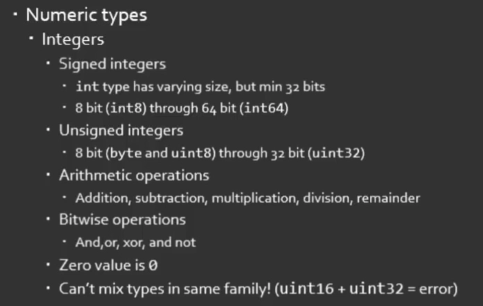
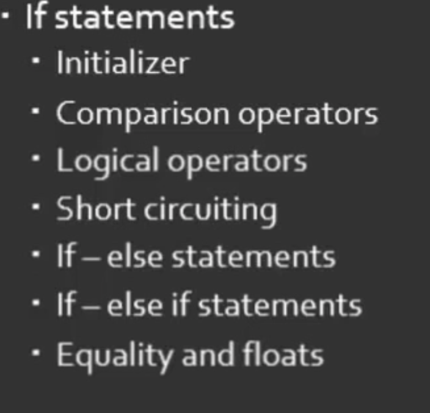
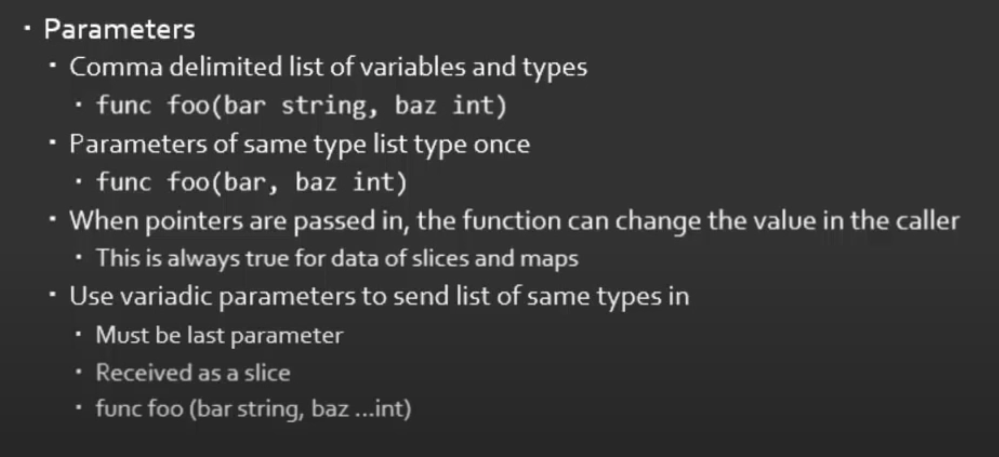

Golang Study Notes
Table of Contents
This is my personal ongoing Golang studing notes. Sources codes and results are embedded into the notes. Some notes are embedded in the comments.
1. Introduction
- Strong and statically typed
- Excellent community
- Key features
- Simplicity
- Fast compile times
- Garbage collected
- Built-in concurrency
- Compile to standalone binaries
https://pkg.go.dev/std A Tour of go Effective go Command Documentation ¶
https://pkg.go.dev/std https://forum.golangbridge.org/ https://blog.gopheracademy.com/gophers-slack-community/ https://play.golang.org/
package main // every go has package import ( "fmt" ) func main() { fmt.Println("Hello") }
“”: quotation mark
2. Setting Up a Development Environment
export GOROOT=/usr/local/go # where go is installed export PATH=$PATH:$GOROOT/bin go version
export GOPATH=~/golib # binaries path, download the source here export PATH=$PATH:$GOPATH/bin
go get github.com/nsf/gocode # autocomplete
export GOPATH=$GOPATH:~/code # anohter GOPATH, multiple path is great for project/workspace
bin pkg # intermediate binaries, for avoid recompiling src github.com vansimke firstapp # go get will recreate this structure? Main.go
go run ${the path of .go} go build ${paht of the pkg name} go install ${paht of the pkg name}
go standlone itself is go workspace, has src, pkg etc
3. Variables

package main // every go has package import ( "fmt" ) func main() { fmt.Println(42) }
package main // every go has package import ( "fmt" ) var l int = 42 // declare // var l float = "error" // wrap in var block var { name string = "Damon" number } // multiple var blocks var { } func main() { var i int //multiple line: var name type, in rust let i: u32 = 42 i = 42 var j float32 = 42 //Same line: var name type, in rust let i: u32 = 42 // k := 99 // no var and int, shorthand version k := 99. // note the period fmt.Println(i) fmt.Printf("%v, %T", j, j) // print value and type fmt.Printf("%v, %T", k, k) // print value and type fmt.Println(l) }
3.1. Shadowing
can not delace two times in same scope, but it is ok for different scope (shadowing) -> different than rust, rust’s shadowing can be in same scope
3.2. Not declare
declare but not use -> compile time error
3.3. Visibility
package level: lower case globcal visible: upper case scope level
3.4. convertion: may lose information
float(x)
int(x)
string(x): if x = 42, output will be *, should use strconv instead
strconv.Itoa(x): convert between number and string
3.5. Summary

4. Primitives
4.1. Agenda

package main import ( "fmt" ) // please notice it is () func main() { var n bool = true fmt.Printf("%v, %T\n", n, n) // Please notice it is P rather than p // Logical test m := 1 == 1 l := 2 == 1 fmt.Printf("%v, %T\n", m, m) fmt.Printf("%v, %T\n", l, l) // Default // var n bool // false // n := 32 // default is init o := 3.14 o = 13.7e72 o = 2.1E14 var n complex64 = complex(5, 12) }
Every value when init Default it is 0 or false Default is int we have int8, int16, int32, int64, uint8, uint16, uint32, no uint64
* 10 / 3 = 3 drop reminder 10 % 3 = 1 reminder
int can not add int8, need use init() convert first
&, |, ^, &^ (how ^ and &^ work?)
<< >>
float32, float64 => only + - * /
complex64, complex128 => real() and imag() funxtion, return float32 or float64
string type (UTF8)
- index with s[2] just like array, return as a uint8
- cannot manipulate the char using s[2] = “u”
- []byte(s): string to byte slices
rune
- read api: ReadRune
- utf32
- Actually is int32 allias
var r rune = 'a'
4.2. Summary

5. Constants
5.1. Agenda
package main import ( "fmt" ) const a int16 = 27 const a = iota // 0, int const ( a = iota b = iota c = iota ) // const block const ( error = iota cat dog snake ) // it will work const ( _ = iota // start from 0, but not assign the memory, optimized by compile cat dog snake ) // it will work const ( _ = iota + 5 // can do some evulation on constant, fix offset cat // will be 6 dog snake ) // it will work func main() { const myConst const MyConst // export const MyConst int = 42 // type constant, can not change later // can not assign run time value to const, no rust const function? const a int = 14 // shawdow a const a = 42 // infer by compiler (the type depends on when we use a in program) var specialType int specialType = cat // check if type specialType is initialized by constant or not, if not, will return as 0, which happens to be the constant - error }
Constant Offset treat in golang:
package main import ("fmt") const ( _ = iota KB = 1 << (10 * iota) MB GB ) func main() { fmt.Println("%v, %v, %v", KB, MB, GB) }
Bit shift, bit mask:
package main import ("fmt") const ( isAdmin = 1 << iota isHeadquarters canSeeFinancial ) func main() { fmt.Println("%v, %v, %v", isAdmin, isHeadquarters, canSeeFinancial) var roles byte = isAdmin | isHeadquarters | canSeeFinancial fmt.Printf("%b\n", roles) fmt.Printf("Is Admin? %v\n", isAdmin & roles == isAdmin) }
5.2. Summary
6. Arrays and Slices
6.1. Agenda
arrays forms the basics of slices
package main import ("fmt") func main() { // grades := [3]int // [no of elements]type // grades := [3]int{97,85,93} // init it // grades := [...]int{97,85,93} // no need no of elements var students [3]string // empty string array students[0] = "Lisa" // modify the array students[1] = "Ahmed" // modify the array students[2] = "Arnold" // modify the array fmt.Printf("%v, %v, %v\n", students, students[1], len(students)) // access the array // array of array var identityMatrix [3][3]int identityMatrix[0] = [3]int{1, 0, 0} identityMatrix[1] = [3]int{0, 1, 0} identityMatrix[2] = [3]int{0, 0, 1} fmt.Printf("%v\n", identityMatrix) // go copy array a := [...]int{1, 2, 3} // b := a // actually copy the whole array, could be expensive b := &a // b points to a, same data b[1] = 5 fmt.Println(a) fmt.Println(b) // slice c := []int{1, 2, 3, 4, 5, 6, 7, 8, 9, 10} // just add three dots turn slice into array d := c // actually assign the reference! d[1] = 5 // PAY ATTENTION: c also changed! fmt.Printf("%v, %v\n", c, d) fmt.Println(len(c)) fmt.Println(cap(c)) // fisrt inclusive, second exclusive, remember start from index 0 e := c[:] // all f := c[3:] // 4th to end g := c[:6] // first 6 h := c[3:6] // 4th, 5th, and 6th fmt.Printf("%v\n", e) fmt.Printf("%v\n", f) fmt.Printf("%v\n", g) fmt.Printf("%v\n", h) // double cap? i := []int{} fmt.Printf("%v, %v, %v\n", i, len(i), cap(i)) i = append(i, 1) fmt.Printf("%v, %v, %v\n", i, len(i), cap(i)) i = append(i, 2, 3, 4, 5) // append more than 1 element i = append(i, []int{2, 3, 4, 5}...) // concat slice, three dots will decompose the slice fmt.Printf("%v, %v, %v\n", i, len(i), cap(i)) // make function make the slice do not expand out of our expected (double capacity if fill up) // use make to define the capacity that closes to our expected value! j := make([]int, 3) // make slice of len 3 all set to zero (go policy) k := make([]int, 3, 100) // make slice of len 3 and cap 100 all set to zero (go policy) fmt.Printf("j: %v, %v, %v\n", j, len(j), cap(j)) fmt.Printf("k: %v, %v, %v\n", k, len(k), cap(k)) // remove last element, make use of len l := []int{1, 2, 3, 4, 5} m := l[:len(l)-1] // remove the last element, exclusive the last element fmt.Println(m) // remove the middle elements n := []int{1, 2, 3, 4, 5} o := append(n[:2], n[3:]...) // notice need to decompose with ..., this operation is dangerous, n will be changed! fmt.Printf("o: %v\n", o) fmt.Printf("n: %v\n", n) // n is no longer the original value, if really n unchanged, we need to use loop to copy n out first }
6.2. Summary
7. Maps and Structs
7.1. Agenda
7.2. Maps
map is hashmap in rust
package main import ("fmt") func main() { stagePopulations := make(map[string]int) // you can use make to make map stagePopulations = map[string]int{ // map[key]value, if not use map, please use := "California": 39250017, "Texas": 27862596, "Florida": 20612439, // do not forget the last comma, otherwise will compile error } // m := map[[]int]string{} // slice is not a valid key type // m := map[[3]int]string{}// array is a valid key type fmt.Println(stagePopulations) fmt.Println(len(stagePopulations)) // len stagePopulations["Georgia"] = 13514169 // append element is simple; element order in the map may be changed delete(stagePopulations, "Florida") // delete element fmt.Println(stagePopulations) fmt.Println(stagePopulations["Texas"]) // access the value fmt.Println(stagePopulations["Florida"]) // access not existed value, return 0!!! florida, ok := stagePopulations["Florida"] // use ok sytax to validate the element exists or not fmt.Println(florida, ok) // the name "ok" is just a convension _, ok2 := stagePopulations["Florida"] // use _ and ok to just check the present fmt.Println(ok2) // jsut like slice, assign will will assign the reference sp := stagePopulations delete(sp, "Georgia") // will delete statePopulations's Georgia as well fmt.Println(stagePopulations) fmt.Println(sp) }
7.3. Structs
package main import ( "fmt" "reflect" ) // reflect used for tags in struct type Doctor struct { // Captial export Number int // export the field with just uppercase! ActorName string Companions []string } // Doctor is a new type type Animal struct { Name string `required max:"100"` Origin string } type Bird struct { Animal // embed Animal! has-a Animal, no need Animal Animal SpeedKPH float32 CanFly bool } func main() { aDoctor := Doctor { Number: 3, ActorName: "Jon", Companions: []string { "Liz", "Jo", }, // do not forget common here } // go support init the value without specific the field name, but it is dangerous if add new field in struct fmt.Println(aDoctor.ActorName) // anonymous struct bDoctor := struct{name string}{name: "John"} fmt.Println(bDoctor) // assign struct is copy the whole struct, just like array, could be expensive anotherDoctor := bDoctor // anotherDoctor := &bDoctor // but we can use address to refer to the same struct anotherDoctor.name = "Tom" fmt.Println(anotherDoctor) // Access the embedded struct type fields bird := Bird{} bird.Name = "Emu" bird.Origin = "Chinese" bird.SpeedKPH = 48 bird.CanFly = false fmt.Println(bird.Name) // init the Animal inside bird // Notice the Animal field, we can directly access the name! bird2 := Bird { Animal: Animal{Name: "Emu", Origin: "Chinese"}, SpeedKPH: 48, CanFly: false, } fmt.Println(bird2.Name) t := reflect.TypeOf(Animal{}) // Empty Animal struct field, _ := t.FieldByName("Name") fmt.Println(field.Tag) }
7.4. Summary
8. If and Switch Statements
8.1. Agenda
8.2. If Statement
package main import ( "fmt" "math" ) func main() { // boolean check if true { // just like rust, no need () fmt.Println("HELLO") } // init and check statePopulations := map[string]int{ // map[key]value, if not use map, please use := "California": 39250017, "Texas": 27862596, "Florida": 20612439, // do not forget the last comma, otherwise will compile error } if pop, ok := statePopulations["Texas"]; ok { // check the ok value fmt.Println(pop) // pop is only accesible inside if block } // operator, < > == <= >= !=, no codes here, since it is easy // logical operator, || && ! // || test will stop if any one of tests true: short circulting // && test will stop if any one of tests false: short circulting fmt.Println(!true) // do not use == in float comparison, since go in handling floating points approximately myNum := 0.123 if myNum == math.Pow(math.Sqrt(myNum), 2) { fmt.Println("Same") } else { fmt.Println("Different") } // Use Abs() < 0.01 to check the result instead if math.Abs(myNum / math.Pow(math.Sqrt(myNum), 2) - 1) < 0.001 { fmt.Println("Same") } else { fmt.Println("Different") } }
8.3. Switch
package main import ( "fmt" ) func main() { switch i:=2+3;i { // i is the tag of switch // switch 2 { // 2 is the tag of switch case 1: fmt.Println("one") case 2: fmt.Println("two") // case 5: // duplicate 5 is not allowed // fmt.Println("five") case 3, 4, 5: // multiple test in one case fmt.Println("three, four, five") default: fmt.Println("other") } }
tag-less switch, very similar with if
package main import ( "fmt" ) func main() { i := 10 switch { // notice here, no tag case i <= 10: fmt.Println("<= 10") fallthrough // need to specific fallthrough! case i <= 20: fmt.Println("<= 20") // break is implied! default: fmt.Println("> 20") } }
type switching with interface (a little similar with trait object but can check type directly)
package main import ("fmt") func main() { var i interface {} = [3]int{} // array with three elements switch i.(type) { case int: fmt.Println("int") break // break early in the middle fmt.Println("not print") case string: fmt.Println("string") case [2]int: fmt.Println("array with 2 elements") case [3]int: fmt.Println("array with 3 elements") default: fmt.Println("other elements") } }
8.4. Summary

9. Looping
9.1. Agenda
9.2. For loop
package main import ( "fmt" ) func main() { fmt.Println("for loop") for i := 0; i < 5; i = i + 2 { fmt.Println(i) } // go do not have comma expression, but can do comma assignment // go also can not use i++ in expression, but can use individually fmt.Println("comman assignment") for i, j := 0, 0; i < 5; i, j = i+1, j+1 { fmt.Println(i, j) } // init the value outside the for loop, k is scope in main function fmt.Println("init outside") k := 0 for ; k < 5; k++ { fmt.Println(k) } // go way to do while loop fmt.Println("go's while loop") l := 0 for ; l < 5; { fmt.Println(l) l++ } // no need ; can also work fmt.Println("go's while loop: no need ;") m := 0 for m < 5 { fmt.Println(m) m++ } // infinite loop fmt.Println("break infinite loop") j := 0 for { j++ if j == 5 { break } } // use `continue` to check process further or not in loop, exit one iteration // break only break the closet loop it can find, we can use label `break Loop` fmt.Println("Use `break label`") Loop: for i := 1; i <= 3; i++ { for j := 1; j <= 3; j++ { fmt.Println(i * j) if i * j >= 3 { break Loop } } } // Loop collections: slice, array, map, string, channel fmt.Println("Loop collections") s := []int{1,2,3} for k, v := range s { // k: index, v: value, s: coleection fmt.Println(k, v) } // for maps // for _, v := range s // only need value // for k := range s // only need key }
9.3. Summary
10. Defer, Panic, and Recover
10.1. Defer
package main import ( "fmt" ) // LIFO func main() { defer fmt.Println("start") defer fmt.Println("middle") // move after main function before main return defer fmt.Println("end") }
package main import ( "fmt" "io/ioutil" "log" "net/http" ) func main() { res, err := http.Get("http://www.google.com/robots.txt") if err != nil { log.Fatal(err) } // open and close right next to each other, would not forget close // if in loop handling multiple resources, `defer` is not the best solution defer res.Body.Close() robots, err := ioutil.ReadAll(res.Body) if err != nil { log.Fatal(err) } fmt.Printf("%s", robots) }
package main import ( "fmt" ) func main() { a := "start" defer fmt.Println(a) // when defer take the original parameter a = "end" }
10.2. Panic
Panic can not continue. For example, file does not exists. But we can recover from panic. It is better to return err.
package main import ( "fmt" ) func main() { fmt.Println("start") defer fmt.Println("Defer first") // defer is followed by panic panic("panic happends after") fmt.Println("end") }
10.3. Recover
package main import ( "fmt" "log" ) func main() { fmt.Println("Start") panicker() fmt.Println("End") } func panicker() { defer func() { if err := recover(); err != nil { log.Println("Error:", err) // panic(err) // if we found the panic can not be handled, repanic here } }() // here we recover the panic panic("something bad happened") fmt.Println("panicker end") }
10.4. Summary
11. Pointer
11.1. Agenda
package main import ( "fmt" ) func main() { var a int = 42 var b *int = &a // put * before the type, pointer, b holds the memory location of a fmt.Println(&a, b, *b) // put * before the variable, dereference *b = 14 // change the value points to fmt.Println(&a, b, *b) }
Unlike C/C++, Go does not allow pointer arithmetic, use unsafe instead
package main import ( "fmt" ) func main() { var ms myStruct ms = myStruct{foo:42} fmt.Println(ms) // almost same behavior expect the print out has a preceding & var ms1 *myStruct ms1 = &myStruct{foo:42} fmt.Println(ms1) // init with new var ms2 *myStruct fmt.Println(ms2) // nil pointer ms2 = new(myStruct) // dereference ms2, sugar! ms2.foo = 42 // dereference ms2 // (*ms2).foo = 42 // dereference ms2.foo // *ms.foo = 42 fmt.Println(ms2) } type myStruct struct { foo int }
Keep in mind all the time: slice and map use pointer when assign value
11.2. Summary
12. Functions
12.1. Agenda

12.2. Functions
package main // entry point import ( "fmt" ) func main() { // `func` keyword, open bracket should be in same line of func greeting := "Hello" name := "Damon" sayMessageMultipleParameters(greeting, name) sayMessageMultipleParameters(greeting, name) sayMessagePassInPointers(&greeting, &name) sum("The sum is", 1, 2, 3, 4, 5) d, err := divide(5.0, 3.0) // use comma delimited variables to accept multi-return function if err != nil { fmt.Println(err) return } // notice NO ELSE here, since if no error, will passthrough fmt.Println(d) func() {fmt.Println("Hello Go!")}() // new scope, need call anoymous function // use variable outside of anoymous function for i :=0; i < 5; i++ { func(i int) { fmt.Println(i) }(i) } // save function and call it later // var f func(float64, float64) (float64, error) // var f func() = func() {} f := func() { fmt.Println("Hello Go, later") } // need to define before using! f() } // closing bracket one line func sayMessage(msg string) { // para in () } func sayMessageMultipleParameters(greeting string, name string) { // multi para in () } func sayMessageCommaDelimited(greeting, name string) { // all are string } func sayMessagePassInPointers(greeting, name *string) { // pass in pointers, more efficient } // be care of: maps and slices are passing with points func sum(msg string, values ...int) { // collect all other int parameters into `values` slice; `values` must be at the end of the parameter list; it is also possible only has `values` fmt.Println(values) result := 0 for _, v:= range values { result += v } fmt.Println(msg, result) } func sumHasReturnValue(values ...int) int { // return int fmt.Println(values) result := 0 for _, v:= range values { result += v } fmt.Println(result) return result } // wired operation, return pointer, it is permitted in go, since go will assign the heap for local variable func sumHasReturnInternalPointer(values ...int) *int { // return int pointer fmt.Println(values) result := 0 for _, v:= range values { result += v } fmt.Println(result) return &result } // return name variable in function signature, we do not need to init the variable and just simplily `return`. But long function maybe more confusing. func sumHasNameReturn(values ...int) (result int ) { // return name int fmt.Println(values) // result := 0 // no need for _, v:= range values { result += v } fmt.Println(result) // return &result // no need return } // return multiple values func divide(a, b float64) (float64, error) { // idiomatic go, return multiple values // do not do else check, instead, do error check at beginning, and return it asap if b == 0.0 { return 0.0, fmt.Errorf("Cannot divide by zero") } return a / b, nil }
12.3. Method
package main import ( "fmt" ) func main() { g := greeter { greeting: "hello", name: "Go", } g.greet() } type greeter struct { greeting string name string } // name: g in the context of this method, value type: greeter // accept one parameter, g, actually, it is this in other languages or self in rust // Value Receiver // just like rust's self func (g greeter) greet() { fmt.Println(g.greeting, g.name) } // Pointer Receiver: assign pointer is also ok // just like rust's &self func (g *greeter) greetPointer() { // name: g in the context of this method, value type: greeter fmt.Println(g.greeting, g.name) }
12.4. Summary


Function is a type.
13. Interfaces
The main features make go maintable
13.1. Agenda
package main import ( "fmt" ) func main() { var w Writer = ConsoleWrite{} w.Write([]byte("hello Go")) } // just like defining struct type Writer interface { Write([]byte) (int, error) } type ConsoleWrite struct {} // implict implementation, no impl keyword func (cw ConsoleWrite) Write(data []byte) (int, error) { n, err := fmt.Println(string(data)) return n, err }
interface is a type, data container interface can be created later, not just on design time naming convension: Single method interface -> Name the interface with method name + er
Implement interface for int
package main import ( "fmt" ) func main() { myInt := IntCounter(0) // this is different than rust, rust use the trait to call the trait function, go use var to define an interface // we can not add method to int, just like rust, we can implement interface for external type var inc Incrementer = &myInt for i := 0; i < 10; i++ { fmt.Println(inc.Increment()) } } type Incrementer interface { Increment() int } type IntCounter int func (ic *IntCounter) Increment() int { *ic++ return int(*ic) }
Embed interfaces into another interface
package main import ( "fmt" "bytes" ) func main() { var wc WriterCloser = NewBufferedWriterCloser() wc.Write([]byte("Hello YouTube listeners, this is a test")) wc.Close() } type Writer interface { Write([]byte) (int, error) } type Closer interface { Close() error } // embedded interfaces into another interfaces // if you impl all the methods - Writer's Write and Closer's Close, you impl WriterCloser as well type WriterCloser interface { Writer Closer } type BufferedWriterCloser struct { buffer *bytes.Buffer } // impl BufferredWriterCloser with Write method func (bwc *BufferedWriterCloser) Write(data []byte) (int, error) { n, err := bwc.buffer.Write(data) if err != nil { return 0, err } v := make([]byte, 8) for bwc.buffer.Len() > 8 { _, err := bwc.buffer.Read(v) if err != nil { return 0, err } _, err = fmt.Println(string(v)) if err != nil { return 0, err } } return n, err } func (bwc *BufferedWriterCloser) Close() error { for bwc.buffer.Len() > 0 { data := bwc.buffer.Next(8) _, err := fmt.Println(string(data)) if err != nil { return err } } return nil } func NewBufferedWriterCloser() *BufferedWriterCloser { return &BufferedWriterCloser { buffer: bytes.NewBuffer([]byte{}), } }
14. Best pratices
- length -> life, but keep as short as possible
- acronym: all uppercase URL rather than than Url
- Pascal or camelCase
package main // every go has package import ( "fmt" ) func main() { var n bool = true fmt.Printf("%v, %T\n", n, n) }